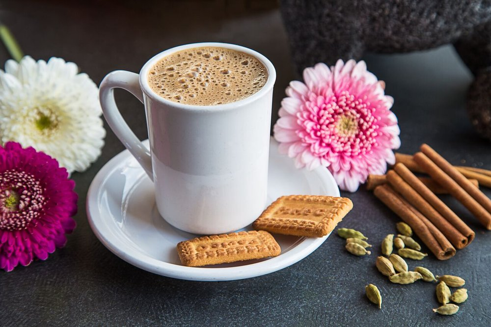

The best Chai in the town is here
In India, a tea is a must for every Indian because it refreshes the mind like no other beverages. Tea is mother drink and serves in every home. Indians love tea more than coffee. Tea is also the only domain where India has been globally prominent in the last one and a half centuries.
Mayur chaha known for
High quality ingredients, Premium spices & mixes,Same unique taste across all the centres, energetic ambience, well trained staff,Regular facility maintenance, unique customer experience
Special Ginger Chai
- 15 Rs
- most people included
Lemon Chai
- 12 Rs
- Low sugar
- Low calorie
- refreshing tea
- Help center access
Masala Chai
- 20 Rs
- Helps boost immunity
- aid digestion
- increase energy